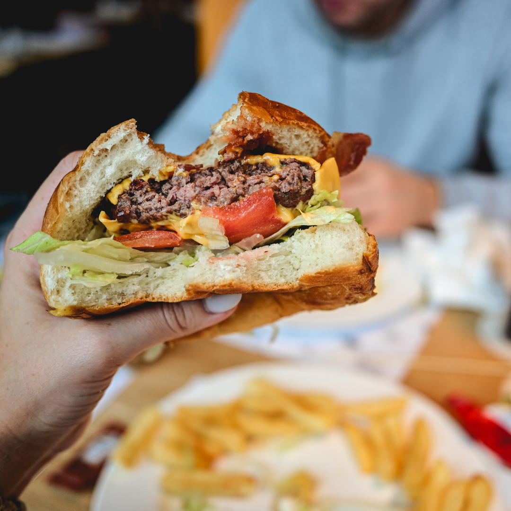

| Há algumas décadas, em Brasília, a hamburgueria SaborArte nasceu de uma história de
família inspiradora. O patriarca, Marcos, um mestre da culinária, compartilhou sua paixão pela comida com seu
filho, Gustavo, desde tenra idade. Juntos, eles embarcaram em uma jornada emocionante para criar uma
hamburgueria única. Com a orientação de Marcos e o entusiasmo de Gustavo, eles abriram as portas da Marcos
Lanches, um local que não apenas serve hambúrgueres excepcionais, mas também reflete o espírito de união e
amor que esta família compartilha. |
A SaborArte rapidamente se tornou um ponto de encontro querido na comunidade. As pessoas eram atraídas não apenas pelos deliciosos hambúrgueres, mas também pela atmosfera calorosa e acolhedora que Marcos e Gustavo criaram. Eles não apenas compartilhavam refeições saborosas, mas também risadas, histórias e memórias preciosas. A hamburgueria representa o legado de uma família que acredita que a culinária pode ser uma forma de amor, união e celebração.
